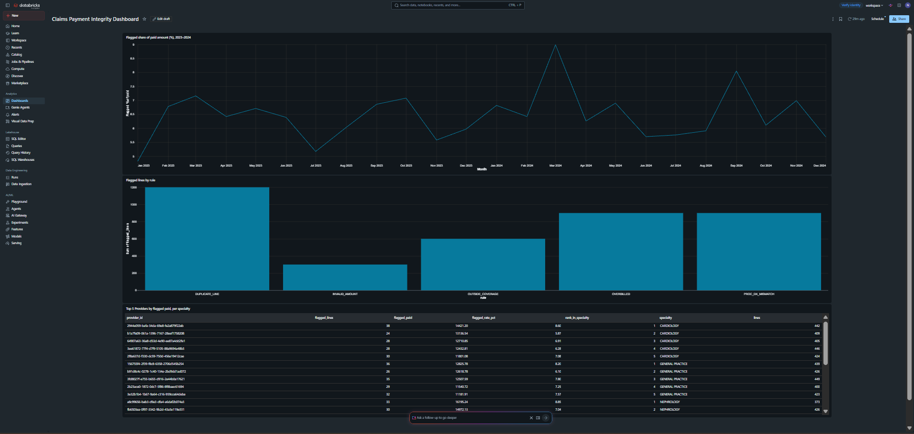

Payment leakage is hard to spot at scale
Duplicate charges, unusually high amounts, coverage errors and procedure/diagnosis mismatches can pass through when checks rely on manual review or fragmented data.
Healthcare claims · Databricks · Azure
A claims payment-integrity lakehouse that turns raw claim, member, provider and eligibility data into traceable, explainable flags—not automatic fraud decisions.
Important: all data is synthetic; this is a personal demonstration project.
Batch detection and reporting. No payment system or reviewer workflow is connected.
BUSINESS PROBLEM, SOLUTION & BENEFIT
Health payers handle high volumes of claim lines. The challenge is to catch questionable payments consistently without treating every claim as an exception.
Duplicate charges, unusually high amounts, coverage errors and procedure/diagnosis mismatches can pass through when checks rely on manual review or fragmented data.
Ingest and validate claims with their reference data, preserve member/provider history, then apply five explainable rules and record each flag with its reason.
A review team could prioritize suspicious lines, investigate recurring provider patterns and retain evidence for follow-up—while clean claims continue through the normal process.
This project demonstrates the detection and reporting layer only. It does not block payments, run a reviewer workflow or measure recovered dollars or operational savings.
THE ARCHITECTURE
A Bronze/Silver/Gold lakehouse separates raw intake, quality checks, historical dimensions and analytical outputs.
Claims · members · providers · eligibility · procedure rules
Auto Loader · raw strings · source lineage
Typed Delta tables · expectations · quarantine
SCD Type 2 dimensions · claim fact · five rules
KPI SQL · rule summary · dashboard
EXPLAINABLE RULES
Each rule marks a claim line and records why it was flagged. A flag means “review this,” not “fraud.”
Repeat claim characteristics; the first occurrence remains unflagged.
1,200 linesBilled amount per unit is more than 3× the procedure’s median allowed amount per unit.
900 linesProcedure code does not match an allowed diagnosis prefix in the demo rules.
900 linesService date falls outside the member’s available coverage span.
600 linesUnits or billed amount ≤ 0, paid amount < 0, or paid exceeds billed.
300 linesThese counts reflect labelled anomalies injected into synthetic data; they are not real-world findings.
FROM TABLES TO DECISIONS
The dashboard summarizes flagged lines by rule, shows the monthly flagged share of paid amounts, and ranks providers within specialty. The trend is restricted to 2023–2024 to exclude a known synthetic-data artifact.
Read the project details
ENGINEERING, NOT JUST A DEMO
Replaying bronze snapshots exposed an SCD2 bug: a repeat run could close current rows using an older effective date and duplicate history. I added a newer-snapshot guard, a bad-date-range check, rebuilt the dimensions and verified that a repeat run leaves the row counts unchanged.
SCOPE & LIMITATIONS
Synthetic data only. The project detects and reports; it is not connected to payment holds, recovery, or a human review queue. Rules are simplified teaching examples, not production edits. No real-world savings, clinical validity or HIPAA compliance is claimed. Azure Data Factory and governance SQL are documented but not run in Azure.